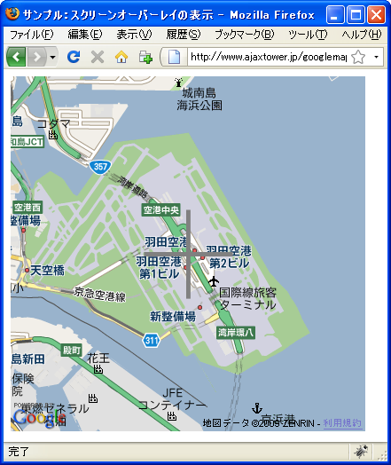
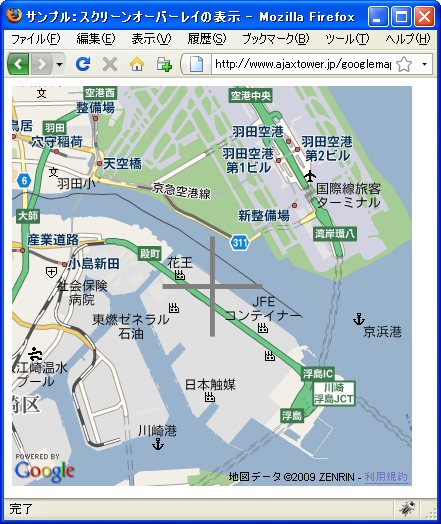
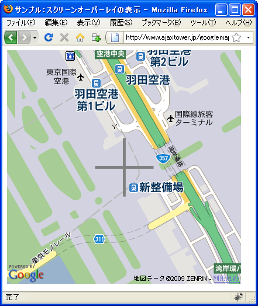

スクリーンオーバーレイの表示
スクリーンに画像を表示するスクリーンオーバーレイの表示方法を確認します。地図ではなくスクリーンに配置される形になりますので地図の移動やズームレベルに変更があっても一定の位置に表示されます。
スクリーンオーバーレイはGScreenOverlayクラスで定義されており、コンストラクタ関数は次のように定義されています。
GScreenOverlay(imageUrl:String, screenXY:GScreenPoint, overlayXY:GScreenPoint, size:GScreenSize)
画像の URL から画面オーバーレイを作成し、screenXY、overlayXY、size の各 パラメータで指定されるとおりに画面上に表示します。overlayXY パラメータ は、screenXY 座標にマップされるオーバーレイ画像上 (またはその外側) の位 置を決定します。これは画像を効果的に「切り抜く」のに使用できます。 screenXY パラメータは、オーバーレイ画像がマップされる画面の原点 (左下隅) からの相対的な位置を決定します。
1番目の引数に表示する画像のURLを指定します。
2番目の引数には画像を表示するスクリーンの位置を指定し、3番目の引数には表示される画像のどの位置が2番目で指定した位置に表意されるのかを指定します。2番目と3番目の引数にはGScreenPointクラスのオブジェクトを使って指定します。
4番目の引数は画像のサイズを指定します。画像のサイズと4番目の引数で指定したサイズが異なる場合、4番目の引数で指定したサイズに画像が拡大縮小されて表示されます。4番目の引数にはGScreenSizeクラスのオブジェクトを使って指定します。
具体的には次のように記述します。
var map = new GMap2(document.getElementById("map"));
map.setCenter(new GLatLng(33.591243,130.412006), 13);
var screenXY = new GScreenPoint(10, 10);
var overlayXY = new GScreenPoint(0, 0);
var size = new GScreenSize(100, 100);
var soverlay = new GScreenOverlay("./sample.png", screenXY, overlayXY, size);
map.addOverlay(soverlay);
※スクリーンオーバーレイなどのオーバーレイを地図に追加する方法については「オーバーレイ(GOverlay)」を参照して下さい。
GScreenPointクラス
GScreenPointクラスはx座標とy座標の2つの値を保持するクラスです。
var spoint = new GScreenPoint(x座標, y座標, x座標の単位, y座標の単位)
3番目と4番目の引数は省略可能です。単位として"pixels"を指定するとピクセル単位での絶対指定となります。"fraction"を指定するとスクリーン全体のサイズに対する割合での指定となります。デフォルトは"pixels"です。
"fraction"はスクリーンの中央などに表示したい場合に便利です。例えば座標に0.5を指定し、単位に"fraction"を指定すれば全体サイズに対して0.5なのでスクリーンの中央が指定されたことになります。
座標は左下を原点とし、x座標は右方向に向かって正の値、y座標は上方向に向かって正の値となります。
GScreenSizeクラス
GScreenSizeクラスは幅と高さの2つの値を保持するクラスです。
var ssize = new GScreenSize(幅, 高さ, 幅の単位, 高さの単位)
3番目と4番目の引数は省略可能です。単位として"pixels"を指定するとピクセル単位での絶対指定となります。"fraction"を指定するとスクリーン全体のサイズに対する割合での指定となります。デフォルトは"pixels"です。
サンプル
では試してみます。
function initialize() {
if (GBrowserIsCompatible()) {
var map = new GMap2(document.getElementById("map_canvas"));
map.setCenter(new GLatLng(35.551362,139.785233), 13);
var screenXY = new GScreenPoint(0.5, 0.5, "fraction", "fraction");
var overlayXY = new GScreenPoint(0.5, 0.5, "fraction", "fraction");
var size = new GScreenSize(101, 101);
var soverlay = new GScreenOverlay("./img/cross.png", screenXY, overlayXY, size);
map.addOverlay(soverlay);
}
}
<!DOCTYPE html "-//W3C//DTD XHTML 1.0 Strict//EN"
"http://www.w3.org/TR/xhtml1/DTD/xhtml1-strict.dtd">
<html xmlns="http://www.w3.org/1999/xhtml" xmlns:v="urn:schemas-microsoft-com:vml">
<head>
<meta http-equiv="content-type" content="text/html; charset=UTF-8"/>
<title>サンプル：スクリーンオーバーレイの表示</title>
<script src="http://maps.google.com/maps?file=api&v=2&key=(key)&sensor=false"
type="text/javascript" charset="utf-8"></script>
<script src="./js/code3_1.js" type="text/javascript"></script>
</head>
<body onload="initialize()" onunload="GUnload()">
<div id="map_canvas" style="width: 400px; height: 400px"></div>
</body>
</html>
ではブラウザで上記のURLを見てみます。

スクリーン中央に下記の画像を表示しています。
スクリーン上に表示された画像ですので、地図を動かしたりズームレベルを変更しても表示される画像の位置やサイズに変化はありません。


( Written by Tatsuo Ikura )

著者 / TATSUO IKURA
初心者～中級者の方を対象としたプログラミング方法や開発環境の構築の解説を行うサイトの運営を行っています。